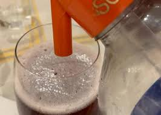

Choripán
un clásico argentino: pan, chorizo de cerdo y chimi.
Precio: $1500
Comida casera..
un clásico argentino: pan, chorizo de cerdo y chimi.
Precio: $1500

Empanada salteña de carne cortada a cuchillo, frita y a leña.
Precio: $800

vino, soda y adentro.
Precio: $2500